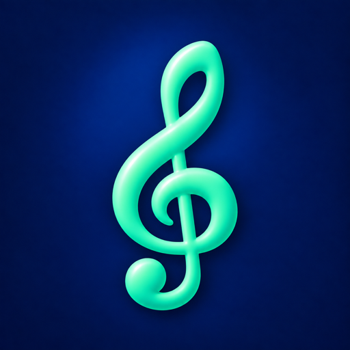
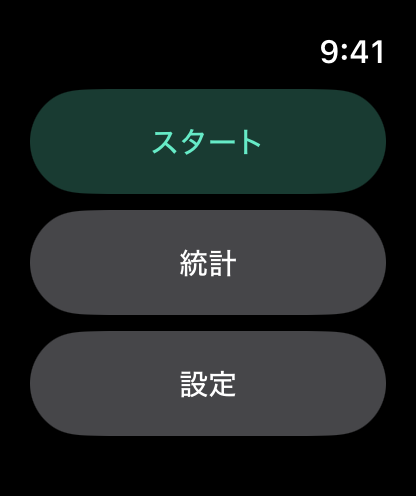
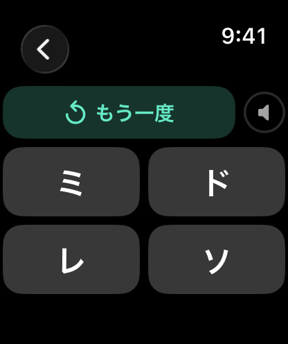
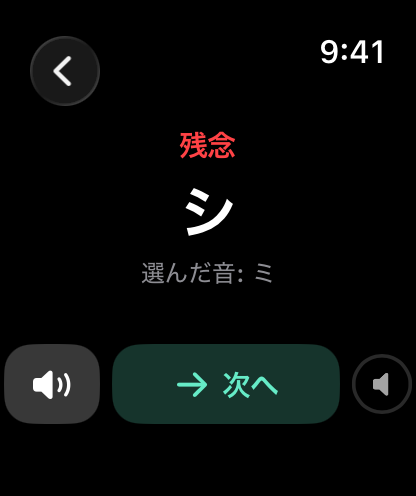
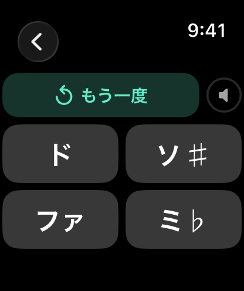
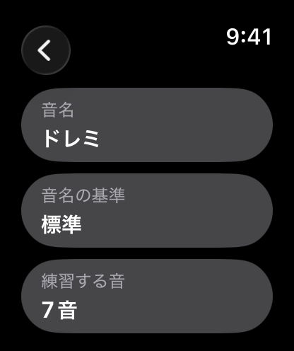
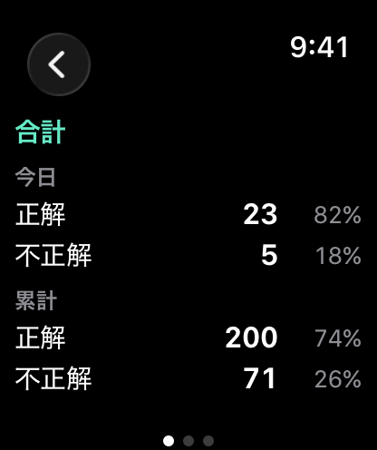

ドレミ先生 ウォッチ
Apple Watchで音を聞き分ける練習ができます。流れた音を聞いて、4つの選択肢から音名を選びましょう。音名はドレミ表記とABC表記に対応。ドレミファソラシの7音から始めて、♯・♭を含む練習もできます。「自分の楽器」では、お使いの楽器に合わせて音名と実際に鳴る音の対応を設定できます。iPhoneは必要ありません。
watchOS 8以降が必要です。
ダウンロード

サポート
ご質問、不具合の報告、アプリの使い方でお困りのことがあれば、お気軽にご連絡ください。いただいたメッセージはすべて確認しています。
お問い合わせの前に
お問い合わせの前に、以下をご確認ください。
- アプリが反応しない場合 Digital Crown を2回押して起動中のアプリを表示し、ドレミ先生のカードを上にスワイプして終了します。その後、アプリ一覧から開き直してください。
- 音が鳴らない場合 練習画面で Digital Crown を回して音量を上げてください。音は Apple Watch のスピーカー、または接続した Bluetooth イヤフォンから再生されます。
- スピーカーの音が小さい場合 周囲が騒がしいときは、Bluetoothイヤフォンを使うと音を聞き取りやすくなります。
- 楽器と音名が合わない場合 設定 →音名の基準が標準と自分の楽器のどちらになっているかをご確認ください。「自分の楽器」の場合は、自分のレの実音の設定も合わせてご確認ください。
- 音名をドレミ表記にしたい場合 設定 →音名で切り替えてください。
よくあるご質問
- iPhone がなくても使えますか？
はい。Apple Watchだけで使えます。iPhoneは必要ありません。 - 回答に制限時間はありますか？
ありません。回答する前に何度でも聞き直せます。回答後は正しい音名を確認でき、音をもう一度聞くこともできます。 - 「自分の楽器」とは何ですか？
楽器で使っている音名と、実際に鳴る音が標準の対応と異なる場合に使う設定です。たとえば、「レ」と呼んでいる弦がEの音を出す場合は、自分のレの実音をEに設定します。すると、ドはD、ミはF♯のように、ほかの音も楽器に合わせて調整されます。 - 「自分の楽器」は ABC 表記でも使えますか？
いいえ。ABC 表記は常に実音を指します。「自分の楽器」はドレミ表記のときだけ使えます。 - ♯・♭の表記はどうなっていますか？
ド♯、ミ♭、ファ♯、ソ♯、シ♭と表示します。答え合わせでは、同じ音を表す別の音名も表示されることがあります。 - どのオクターブで鳴りますか？
Apple Watchのスピーカーで聞き取りやすいC5〜B5付近で再生します。回答は音名だけで判定され、オクターブは問いません。 - どの回答が統計に含まれますか？
回答した問題だけが集計されます。聞き直した回数や、回答せずに終了した問題は含まれません。 - 設定は保存されますか？
はい。音名の表記、楽器に合わせた音名の設定、練習する音は保存されます。アプリを開き直しても設定は変わりません。 - データは収集されますか？
いいえ。収集も共有も一切行っていません。設定と練習の成績は Apple Watch 内にのみ保存されます。
使い方






練習の流れ
- スタートをタップすると、すぐに音が鳴ります。
- もう一度聞きたいときは、もう一度をタップします。
- 聞こえた音に合う音名を、4つの選択肢から選びます。
- 結果画面に正解または残念、正しい音名、選んだ音が表示されます。スピーカーのボタンでもう一度聞けます。
- 次へをタップすると新しい音が出題されます。
設定
- 音名: ドレミまたは ABC。
- 音名の基準: 標準(ドは C、レは D …)または自分の楽器。
- 自分の楽器: < と > のボタンで、基準の音名の実音を選びます。基準の音名の初期値はレです。下にはすべての音名とその実音の一覧が表示されます。
- 練習する音: 7音(幹音のみ)または♯・♭を含む(12音すべて)。
「自分の楽器」で7音を選ぶと、その楽器でドレミファソラシと呼ぶ音が出題されます。設定によっては、ピアノの黒鍵に当たる音も含まれます。下の表は、標準と、レの実音をEに設定した自分の楽器の比較です。この例では、すべての音が標準より全音（半音2つ分）高くなります。
| 音名 | 標準 | 自分の楽器(レの実音 = E) |
|---|---|---|
| ド | C | D |
| レ | D | E |
| ミ | E | F♯ |
| ファ | F | G |
| ソ | G | A |
| ラ | A | B |
| シ | B | C♯ |
統計
統計では今日と累計の正解数・不正解数を、それぞれ割合とともに確認できます。横にスワイプすると合計、7音、♯・♭を含むの3ページを切り替えられます。
法的情報
プライバシーポリシー
最終更新: 2026年9月
はじめに
ドレミ先生 ウォッチをご利用いただきありがとうございます。当社はお客様のプライバシーを尊重し、保護することをお約束します。本プライバシーポリシーでは、当社が収集する情報、この場合は収集しない情報の種類と、プライバシーを守るための方法について説明します。
収集しない情報
ドレミ先生 ウォッチは、データを一切収集しないという原則のもとに設計されています。お客様の個人データを収集、保存、利用、共有、転送することはありません。アプリはすべて Apple Watch 上で動作し、サーバー上でデータを処理または保存することはありません。
本アプリが Apple Watch 内に保存するのは、設定(音名の表記、楽器のマッピング、練習する音)と、練習の成績(今日と累計の正解数・不正解数)の2つだけです。これらは Apple Watch 内にのみ保存され、どこにも送信されず、アプリを削除すると消去されます。
本アプリはネットワークに接続せず、マイクも使用せず、アカウント登録、解析、広告、第三者製のコードも一切ありません。
第三者のサービス
ドレミ先生 ウォッチは、解析ツール、広告ネットワーク、ソーシャルメディアなど、いかなる第三者のサービスとも連携していません。第三者とデータを共有することはありません。
子どものプライバシー
当社はデータを一切収集していないため、児童オンラインプライバシー保護法(COPPA)など、子どものプライバシーに関するすべての関連規制を遵守しています。
本ポリシーの変更
本プライバシーポリシーは随時更新される場合があります。変更の有無について、このページを定期的にご確認ください。変更はこのページに掲載された時点で有効となります。
お問い合わせ
本プライバシーポリシーについてご質問やご提案がある場合は、次のアドレスまでお気軽にご連絡ください: support [at] hoshinosoftware [dot] com